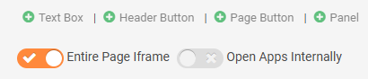
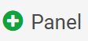

You are not able to navigate within the preview window. The preview window only indicates whether the URL is whitelisted and will correctly load, or if there is an error.
An iFrame allows you to embed web pages, images, video, or other web applications in the Portal. To embed content using an iFrame, the URL domain must be whitelisted in the security settings. For more information on whitelisting URLs, see Whitelist URLs.
An iFrame can be added as an entire page or as a panel.
To create an iFrame page:

You are not able to navigate within the preview window. The preview window only indicates whether the URL is whitelisted and will correctly load, or if there is an error.
To create an iFrame panel:
From the page view, select Settings.
Click Add Panel.

From the Add new Panel dialog, click Create New Panel.

You are not able to navigate within the preview window. The preview window only indicates whether the URL is whitelisted and will correctly load, or if there is an error.